01
이용 방식이 불분명한 서비스
대기예약·예약·웨이팅의 차이와 이용 방식에 대한 설명이 부족해, 사용자가 목적에 맞는 서비스를 선택하기 어렵습니다.
The differences between reservation requests, reservations, and waitlists are not clearly explained, making it difficult to choose the right service.

맛집 탐색부터 예약까지의 경험을 개선한 캐치테이블 리디자인 프로젝트입니다. 사용자의 탐색 흐름과 예약 과정을 분석하고, 정보의 우선순위와 화면 구성을 정리해 원하는 식당을 쉽게 찾고 편리하게 예약할 수 있도록 제안합니다.
A CATCHTABLE redesign project that improves the experience from restaurant discovery to reservation. By analyzing how users explore restaurants and book tables, I refined the information hierarchy and screen layouts to help them find the right restaurant and make reservations with ease.
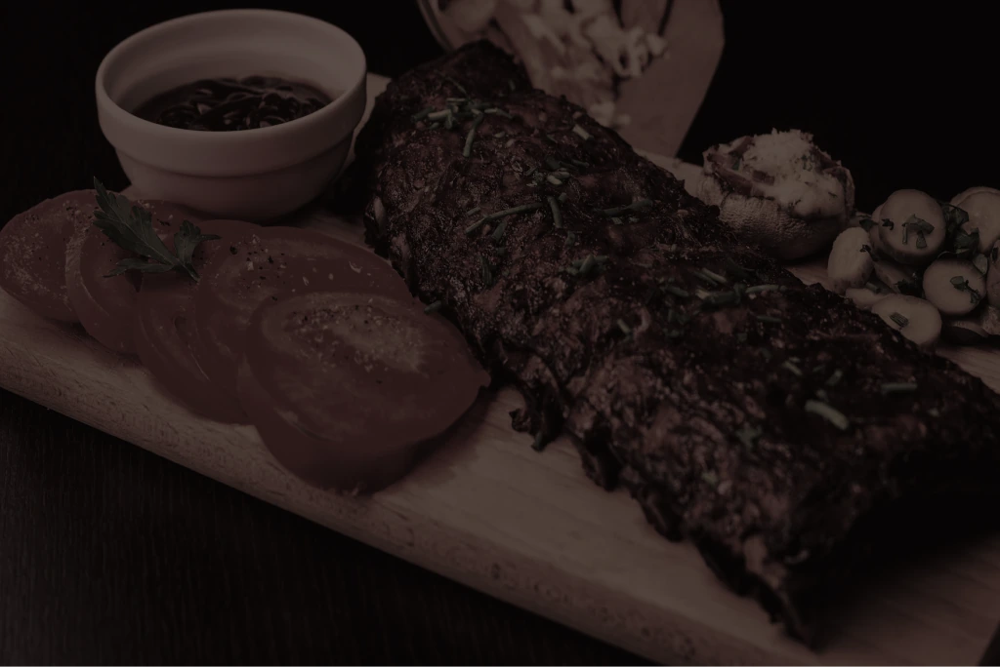
Overview
캐치테이블은 단순한 예약을 넘어 맛집 탐색부터 원격 줄서기, 방문까지의 모든 과정을 매끄럽게 연결하는 미식 특화 플랫폼입니다. 파편화된 외식 정보를 한곳에 모아, 누구나 쉽고 빠르게 취향에 맞는 레스토랑을 발견하고 예약할 수 있는 환경을 제공합니다.
CATCHTABLE is a dining platform that seamlessly connects every step of the experience, from discovering restaurants and joining waitlists remotely to booking and visiting. By bringing scattered dining information together in one place, it helps users quickly and easily find and book restaurants that match their tastes.
Background
넷플릭스에서 방영한 흑백요리사가 흥행하면서 파인다이닝, 미식을 즐기는 문화가 형성되었고 사용자가 급격히 늘어남에 맞춰서 리브랜딩이 진행되었습니다.
Following the success of Netflix’s Culinary Class Wars, interest in fine dining and gourmet experiences surged. The rebranding was undertaken in response to the resulting rapid growth in the user base.
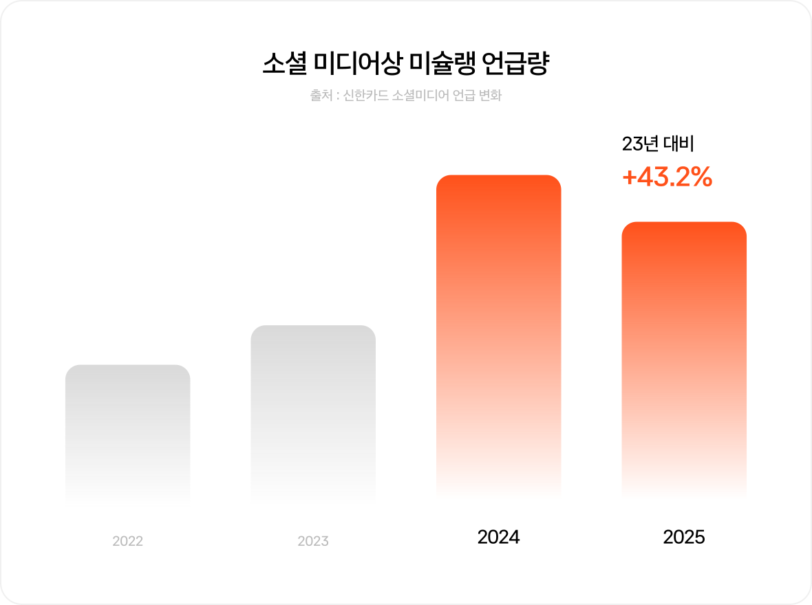
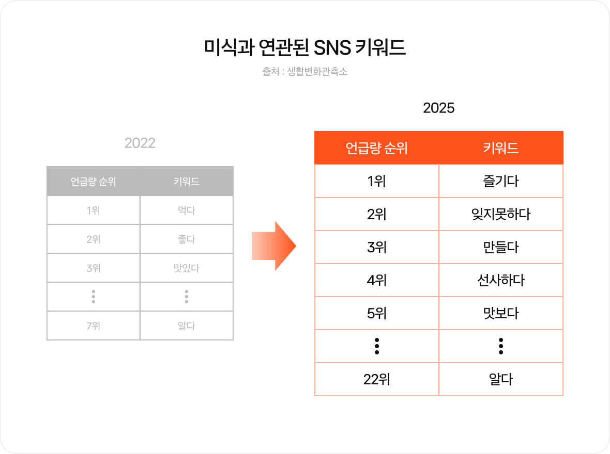
Problem
앱 서비스는 기존에 가지고 있던 문제점이 개선되지 않고, 유지되었습니다.
Despite the rebranding, the app’s existing issues remained unresolved.
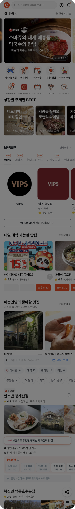
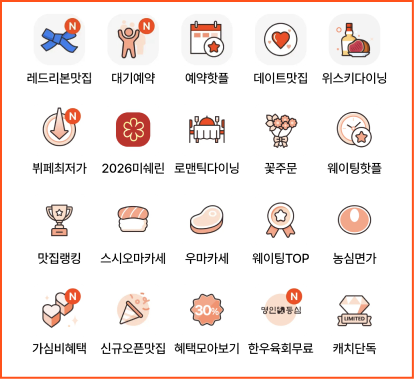
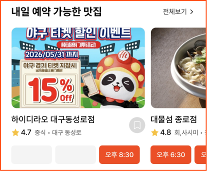
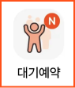
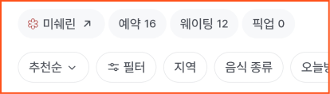
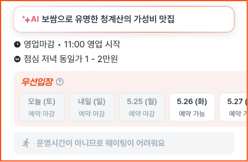
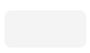
대기예약·예약·웨이팅의 차이와 이용 방식에 대한 설명이 부족해, 사용자가 목적에 맞는 서비스를 선택하기 어렵습니다.
The differences between reservation requests, reservations, and waitlists are not clearly explained, making it difficult to choose the right service.
일부 아이콘 메뉴가 하단 콘텐츠 및 프로모션과 동일한 정보를 제공해, 각 메뉴의 역할과 차이를 파악하기 어렵습니다.
Some icon menus lead to the same content as sections and promotions further down the page, making their distinct roles unclear.
브랜드명 사이의 간격이 좁고 ‘신규’ 배지가 반복되어, 원하는 브랜드를 빠르게 구분하고 찾기 어렵습니다.
Tightly spaced brand names and repeated “New” badges make it difficult to scan the list and find a specific brand.
저장 버튼의 선택 전후 상태가 시각적으로 뚜렷하게 구분되지 않아, 식당이 저장되었는지 확인하기 어렵습니다.
The Save button lacks a clear visual distinction between its selected and unselected states, making it hard to tell whether a restaurant has been saved.
지난 시간이나 예약이 마감된 시간대를 빈 회색 박스로 표시해, 해당 시간과 예약 불가 상태를 확인하기 어렵습니다. 별도의 안내도 없어 로딩 중인 영역으로 오인할 수 있습니다.
Past and fully booked time slots appear as empty gray boxes, hiding both the times and their availability status. Without an explanation, users may mistake them for loading placeholders.
서비스 유형과 정렬·필터 조건이 한 영역에 밀집되어 있어, 각 항목의 역할을 구분하고 필요한 조건을 찾기 어렵습니다.
Service types, sorting options, and filters are crowded into one area, making it difficult to distinguish their roles and find the right options.
식당 정보와 예약·웨이팅 안내를 각각의 박스로 반복해 구분하면서 시선이 분산되고, 핵심 정보를 한눈에 파악하기 어렵습니다.
Repeated boxes around restaurant details, reservation options, and waitlist information fragment the layout and make key information harder to grasp at a glance.
Persona
이지수 · 26세 / 마케터
Pain Point
즉시 예약, 우선입장,
웨이팅의 차이를 몰라
잘못 선택할까봐 불안
Needs
예약 방식 차이를 한눈에
이해할 수 있도록 구분
Goal
탐색부터 예약까지 흐름이 끊기지 않을 것
김태민 · 38세 / IT기업 팀장
Pain Point
예약을 위해 탐색을 하면서
빈 시간 슬롯이 마감인지
미오픈인지 혼란
Needs
예약 가능 여부와
시간을 바로
파악할 수 있는 상태 표기
Goal
실수 없이 빠르게 정확한 일시/인원으로 예약을 확정할 것
Direction
즉시 예약과 웨이팅 서비스 UI를 명확히 분리
카드 하나에 담긴 과도한 정보를 덜어내고 위계 압축
Clearly separate the instant booking and waitlist interfaces.
Reduce information overload on each card and streamline the hierarchy.
시간 슬롯이나 버튼 눌림 상태 명확히 구분
복잡한 흐름이 아닌 원터치 즉시 예약
Clearly distinguish selected time slots and pressed button states.
Enable instant booking with a single tap.
박스 안에 박스가 중첩되는 구조 해체
보조 정보로 인한 시각적 불편함 해소
Eliminate nested box structures.
Reduce visual clutter caused by secondary information.
Benchmarking
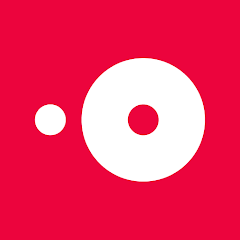
글로벌
글로벌
글로벌
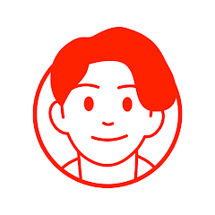
한국
한국
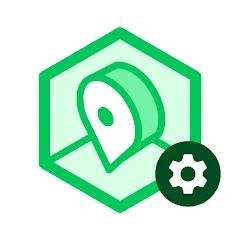
한국
Positioning
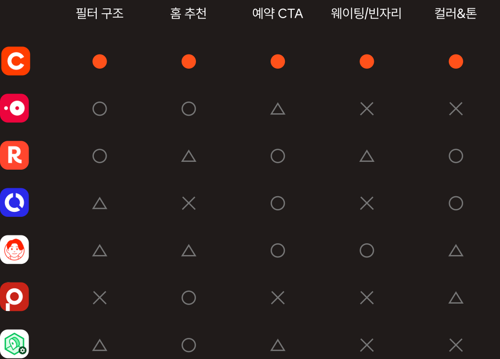
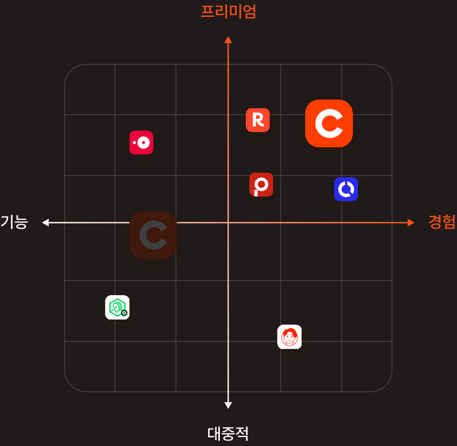
Design System
미식에 어울리는 프리미엄 서비스, 캐치테이블
미식에 어울리는 프리미엄 서비스, 캐치테이블
미식에 어울리는 프리미엄 서비스, 캐치테이블
| 명칭 | 크기 | 행간 | 자간 |
|---|---|---|---|
| heading | 24px | 120% | -1% |
| title | 20px | 140% | -1% |
| body1 | 16px | 140% | -1% |
| body2 | 14px | 140% | -1% |
| label | 12px | 140% | -0.5% |
| caption | 10px | 140% | -0.5% |
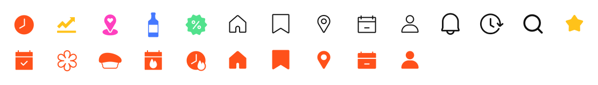
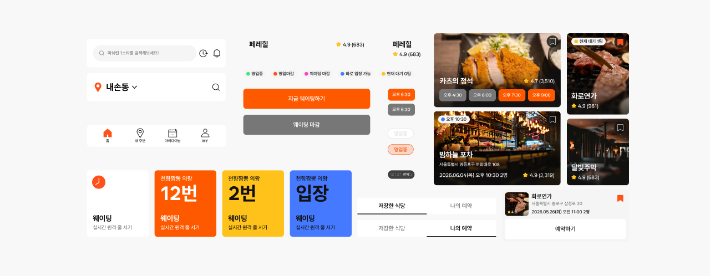